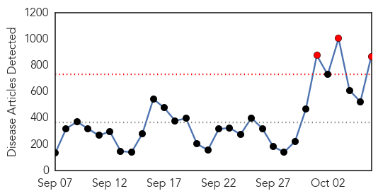
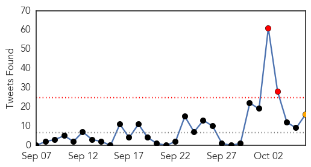
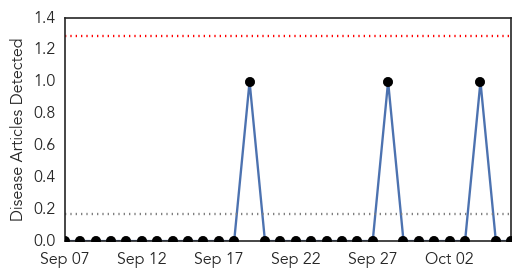

Ebola
30-Day Web Trend
3 alerts, 0 warnings

30-Day Twitter Trend
1 alerts, 0 warnings

Article Locations
Article Confidences
Top Articles:
- 1.000
- Worst Ebola outbreak on record tests global response
- 1.000
- WBTV 3 News, Weather, Sports, and Traffic for Charlotte, NC
- 1.000
- What is Marburg, the Ebola-like virus that killed a health-care worker in Uganda?
- 1.000
- No one knows exactly how bad West Africa's Ebola epidemic is
- 1.000
- Spanish Nurse Tested Positive for Ebola Virus
- 1.000
- Dallas Ebola patient getting experimental drug
- 1.000
- U.S. working on new screenings for Ebola but no travel ban
- 1.000
- New concern worldwide as nurse in Spain gets Ebola
- 1.000
- Is So. Utah ready to deal with the Ebola virus?
- 1.000
- Madrid: Spanish nurse contracts Ebola
- 1.000
- Spanish nurse first to contract Ebola outside Africa
- 1.000
- New concern worldwide as nurse in Spain gets Ebola (updated)
- 1.000
- Chronology: Worst Ebola outbreak on record tests global response
- 1.000
- Spanish nurse first to contract Ebola outside Africa
- 1.000
- Obama considers tighter Ebola screening for travelers from West Africa
- 1.000
- Ebola-Infected Newsman Arrives at Nebraska Hospital
- 1.000
- Ebola Patient in Dallas Hospital Takes Turn for Worse
- 1.000
- Correcting flaws in the Ebola response
- 1.000
- What You Need to Know: How the Ebola Virus Is Spread
- 1.000
- Spanish nurse first to contract Ebola outside Africa
- 1.000
- Spanish Nurse First To Be Infected Outside Of Africa
- 1.000
- Dallas Ebola Patient Getting Experimental Drug
- 1.000
- Why nation’s top docs say Ebola won’t spread in US
- 1.000
- What You Should Know About Ebola In The U.S.
- 1.000
- CDC Issues Alert on Evaluating Patients for Possible Ebola Virus Disease
- 1.000
- Ebola outbreak: Spanish nurse is first person to contract disease outside western Africa
- 1.000
- Ebola in US: Thomas Eric Duncan 'fighting for his life in hospital' after ZMapp drug supplies run out
- 1.000
- Ebola Aid Workers Shocked By WHO's 'Amateurism' In Response To Outbreak
- 1.000
- How Doctors Test For Ebola
- 1.000
- U.S. Military To Put Up Tent At Liberia Ebola Clinic
- 1.000
- Ebobla Virus at Hajj Worries Saudi Health Officials
- 1.000
- San Angelo Standard Times
- 1.000
- Global response put to test by the worst Ebola outbreak in history
- 1.000
- DeKalb County officials urge Ebola education
- 1.000
- Insiders say the WHO is amongst the most politicized of UN agencies, with governments holding sway over its regional operations.
- 1.000
- The first patient diagnosed with the disease on U.S. soil, Thomas Eric Duncan, remained in critical condition in a Dallas hospital.
- 1.000
- Nigeria: U.S. sends medical experts to study how Nigeria tamed Ebola
- 1.000
- Why nation's top docs say Ebola won't spread in US
- 1.000
- Ebola in US: People scared, but outbreak unlikely
- 1.000
- Why nation’s top docs say Ebola won’t spread in US
- 1.000
- Worst Ebola outbreak on record tests global response
- 1.000
- Why nation’s top docs say Ebola won’t spread in U.S.
- 1.000
- Why nation's top docs say Ebola won't spread in US
- 1.000
- Chronology: Worst Ebola outbreak on record tests global response
- 1.000
- Aid workers ask where was WHO in Ebola outbreak?
- 1.000
- Jacksonville hospitals training personnel to follow CDC guidelines if they receive patients who might have Ebola
- 1.000
- People scared, but outbreak unlikely
- 1.000
- Test Results Reveal Doctor Re-admitted to Hospital, Free of Ebola Virus: Reports
- 1.000
- County health officials prepared to deal with Ebola
- 1.000
- CHRONOLOGY-Worst Ebola outbreak on record tests global response
Showing top 50 articles...
Top Tweets:
- 0.996
- There are different strains of Ebola. The outbreak in W Africa is the Ebola Zaire strain, not Ebola Reston in the article.
- 0.939
- RT: @jsafier EBOLA WARRIORS!!! endebolanow spreadawarene…
- 0.924
- There is no FDA-approved vaccine or medicine available for Ebola.
- 0.907
- In the first days of the Ebola outbreak in West Africa, as aid workers and health authorities battled to contain... http://t.co/FshtCUmzh6
- 0.891
- Insights into the Early Epidemic Spread of Ebola in Sierra Leone Provided by Viral Sequence Data http://t.co/j5yt5VPBL1
- 0.875
- There is no evidence that mosquitos or other insects can transmit Ebola virus.
- 0.844
- Let's do something to stop the spread of Ebola in West Africa. EbolaNoMore
- 0.840
- RT: WHO shoots down the "mutation" speculation in Ebola virus; no evidence of any major virus ever dramatically changing its…
- 0.790
- Experimental vaccines & treatments developed for Ebola have not been fully tested for safety or effectiveness.
- 0.770
- Ebola healthcare workers wear protective gear to protect themselves from bodily fluids not because Ebola is airborne.
- 0.761
- Only mammals (ex., humans, bats, monkeys and apes) have shown the ability to become infected with and spread Ebola virus.
- 0.754
- - There is no evidence that mosquitos or other insects can transmit Ebola virus. http://t.co/UOMbii8pas
- 0.751
- Get the facts about Ebola. An exposed person must be sick and have symptoms to spread Ebola to others. http://t.co/qBFzbMziMa
- 0.727
- Liberia needs 9- 10,000 health workers for Ebola treatment sights, but skills shortage proving to be a problem. http://t.co/VNcmsjqusC
- 0.717
- - We are sure. Ebola is not a respiratory disease like the flu, so it is not spread through the air. http://t.co/1OsrUzqssF
- 0.704
- RT: @who please stop flights in+out of Ebola infected countries! Do you want it to spread and kill billions? @EbolaWarning…
- 0.700
- RT: Ebola, MERS and RSV: Gaithersburg biotech works on making vaccines — and fast http://t.co/h1JAM7eUR3
- 0.677
- CDC is supporting the Ebola response in West Africa and from the United States. Find out how: http://t.co/FU2jpESDRS
- 0.662
- RT: "Detailed Hospital Checklist for Ebola Preparedness" and webinar now available from and http://t.c…
- 0.655
- RT: Was there some great disturbance in the bat force this year? MERS Ebola now Marburg outbreak in Uganda
- 0.651
- Ebola affects more than just our bodies; @nytimes on US Ebola patient's life and loves http://t.co/7qFuKKShAD
- 0.636
- reports 121 Ebola deaths in Sierra Leone in one day, one of the deadliest days since start of outbreak. http://t.co/Xe3mdKCL0B
- 0.574
- How Pregnant Women Are Becoming Victims Of The Ebola Outbreak http://t.co/0ohEl00sYf jnj globalmotherhood via
- 0.571
- Nurse infected with Ebola in Spain http://t.co/RwZFj4TtD7
- 0.523
- RT: A Spanish nurse has become the first person to be infected with Ebola outside of West Africa. http://t.co/t3LPq42VeR
Mold/Fungal
30-Day Web Trend
0 alerts, 0 warnings

30-Day Twitter Trend
0 alerts, 0 warnings
Article Locations

Article Confidences

Top Articles:
-
No articles found for Oct 06, 2014
Top Tweets:
-
No tweets found for Oct 06, 2014